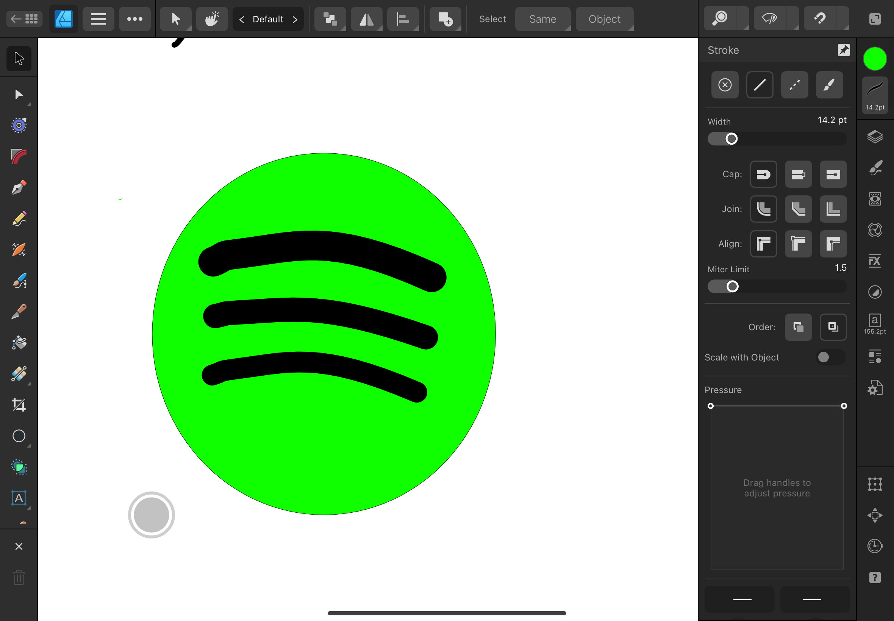
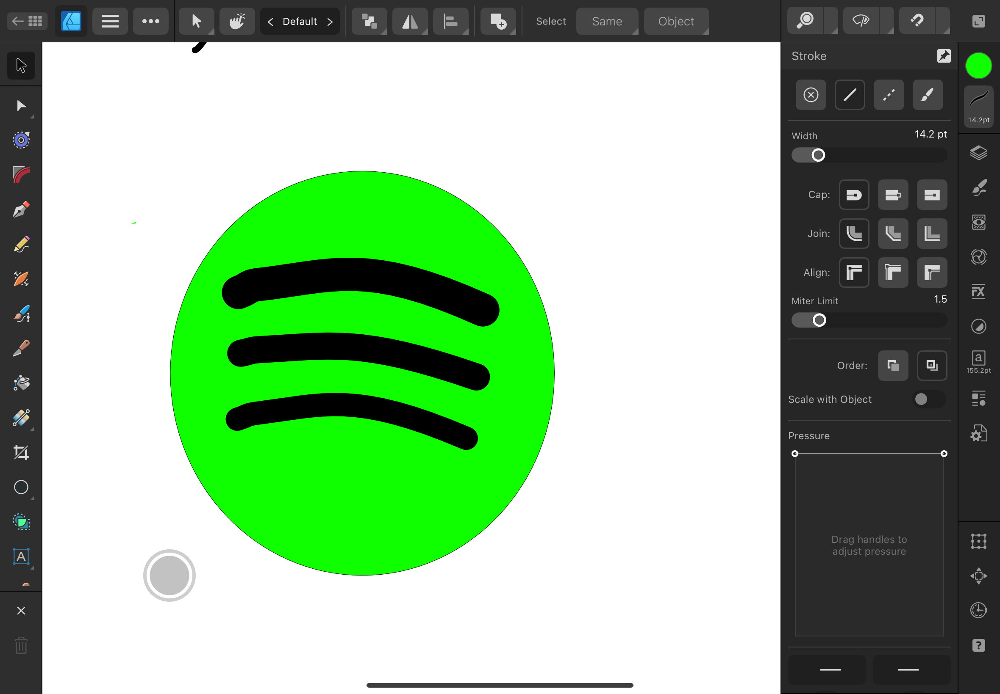

Laser Cutting & Engraving
High precision for sheet materials like plywood, acrylic, cardboard, and some fabrics.
This subsite covers digital fabrication with laser cutters, vinyl cutters, and CNC routers—from design prep and machine setup to safe operation and finishing. Use it as a quick reference for workshops or coursework.
High precision for sheet materials like plywood, acrylic, cardboard, and some fabrics.
Fast, quiet cutting of adhesive films, heat‑transfer vinyl (HTV), and stencils.
 

Subtractive machining of wood, plastics, and soft metals using toolpaths (2D/2.5D/3D).

Tip: Document settings per material (e.g., 3mm birch: 35% power @ 15mm/s; 6mm cast acrylic: 65% @ 8mm/s). This builds a local library for consistent results.
| Material | Tool | Thickness | Start Settings | Notes |
|---|---|---|---|---|
| Birch Plywood | Laser | 3 mm | Power 35–45%, 15–20 mm/s | Mask for cleaner edges; watch for voids. |
| Cast Acrylic | Laser | 3–6 mm | Engrave 20–30%, Cut 55–70% @ 6–12 mm/s | Use air assist; avoid flame‑polished edges near joints. |
| Cardboard | Laser | Single wall | Power 15–25%, 25–35 mm/s | Highly flammable—never leave unattended. |
| Adhesive Vinyl | Vinyl Cutter | Film | Blade depth: just through film; Speed: medium | Test cut a small square with triangle; adjust force. |
| HTV (Heat‑Transfer) | Vinyl Cutter | Film | Mirror art; 150–160°C, 10–15s press | Warm or cold peel depending on brand. |
| MDF | CNC | 12–18 mm | 6mm end mill, 18k RPM, 1500–2500 mm/min, 2–3 mm DOC | Go |